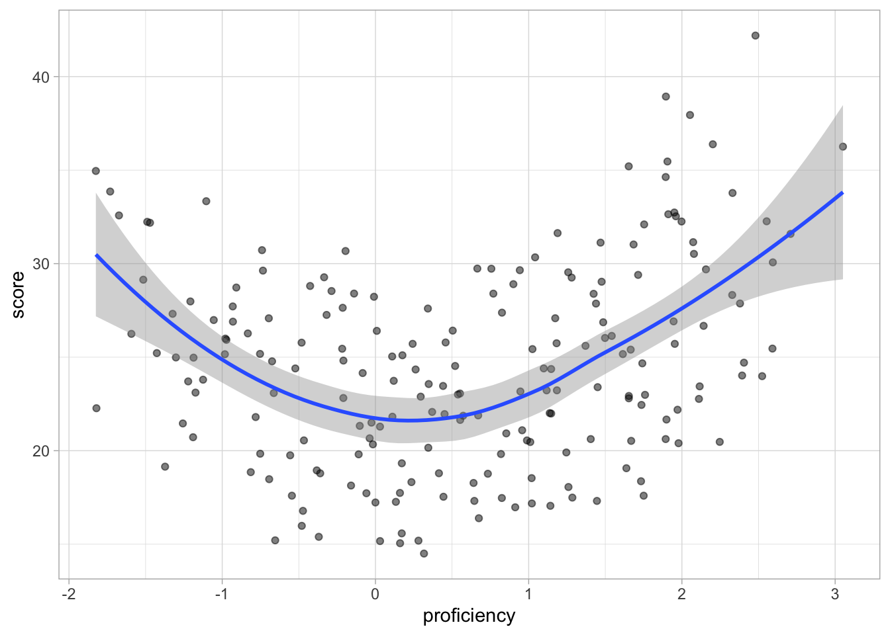
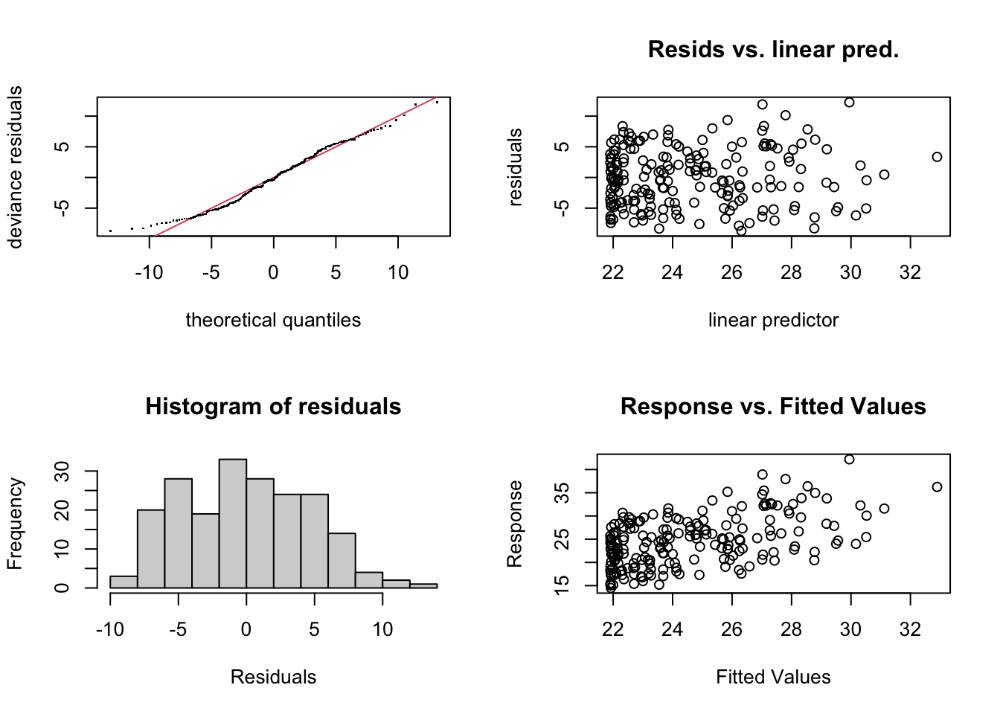
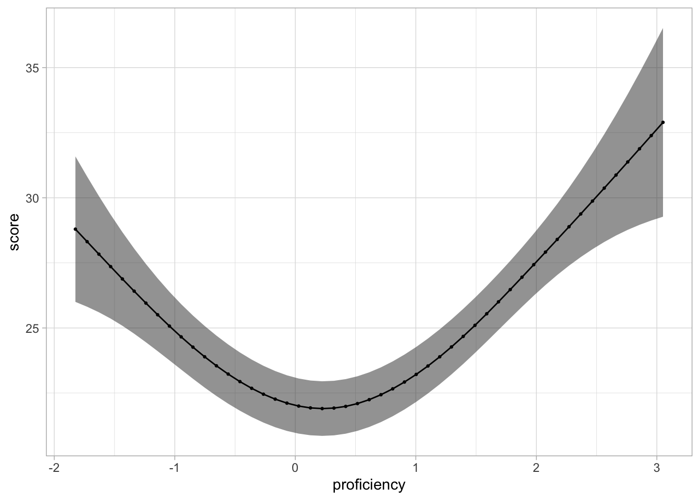
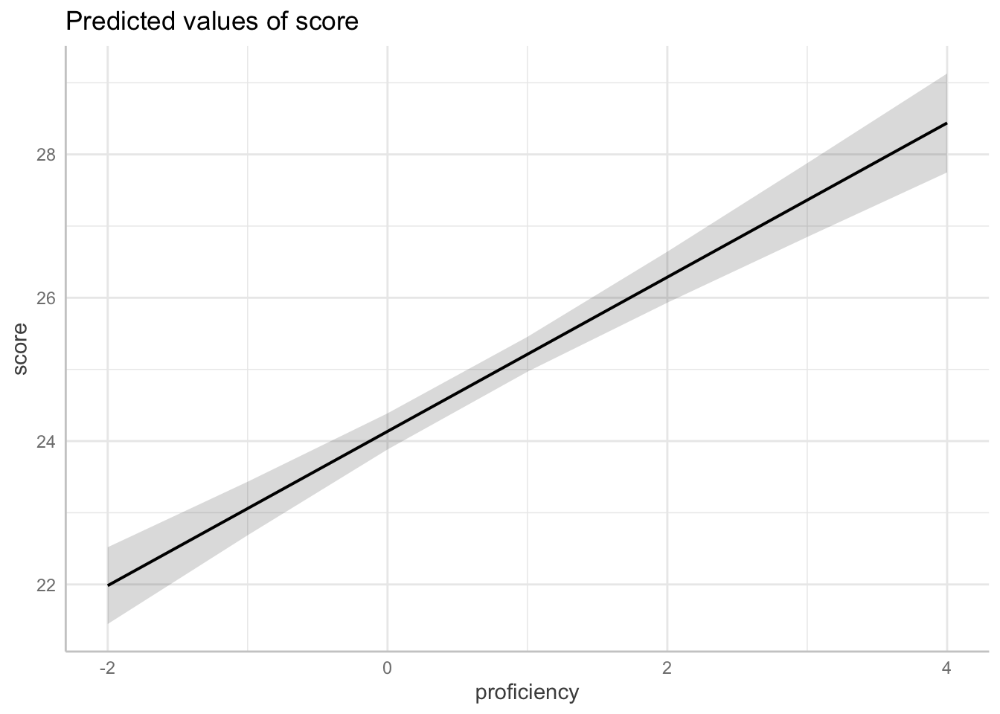
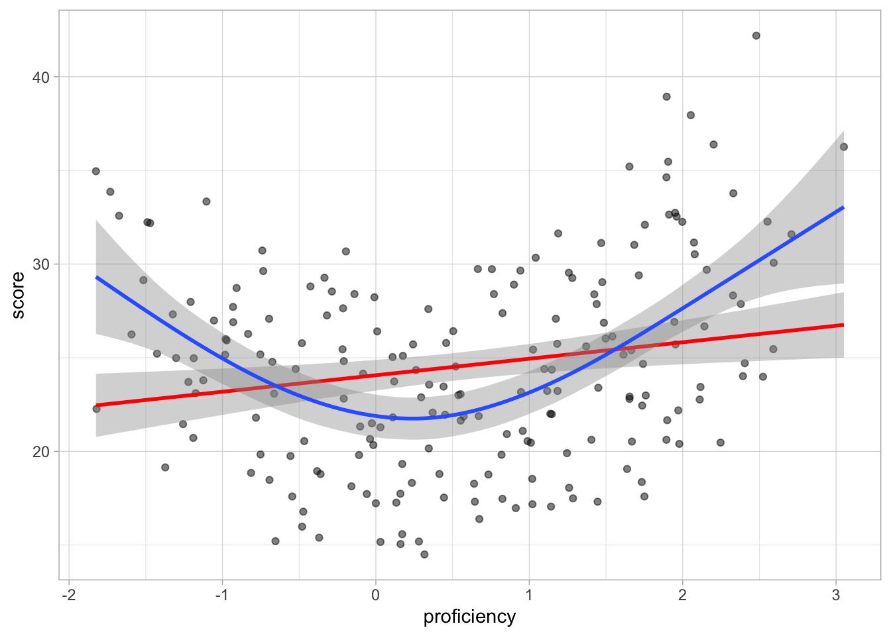
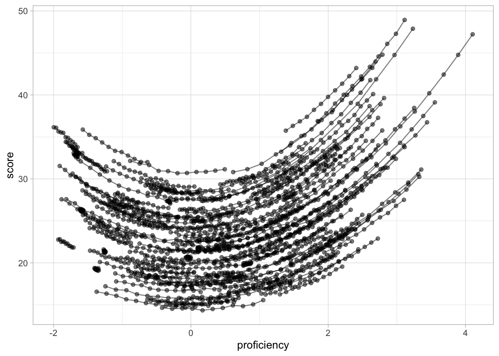

library(tidyverse)
theme_set(theme_light())
library(mgcv)
library(tidygam)
library(ggeffects)
my_seed <- 478502 Data analysis
Read data
dat1 <- readRDS("data/dat1.rds")
dat2 <- readRDS("data/dat2.rds")Data 1
Score and proficiency (single time point)
Let’s start with data from a single time point and let’s model score as a function of proficiency.
dat1_5 <- dat1 %>%
filter(time == 5)
dat1_5# A tibble: 200 × 4
score proficiency subj time
<dbl> <dbl> <fct> <int>
1 25.2 -0.983 s1 5
2 18.3 0.235 s2 5
3 27.6 0.342 s3 5
4 28.9 0.900 s4 5
5 20.5 2.25 s5 5
6 23.2 1.12 s6 5
7 32.1 1.75 s7 5
8 25.8 -0.482 s8 5
9 34.6 1.89 s9 5
10 23.0 0.538 s10 5
# ℹ 190 more rowsThere are 200 subjects. The median score is 24.3820745 with a range between 14.5011503 and 42.1930883. The median proficiency is 0.5523342 with a range between -1.8246456 and 3.0510078.
dat1_5 %>%
ggplot(aes(proficiency, score)) +
geom_point(alpha = 0.5) +
geom_smooth()
d1_gam_1 <- gam(
score ~ s(proficiency),
data = dat1_5
)
summary(d1_gam_1)
Family: gaussian
Link function: identity
Formula:
score ~ s(proficiency)
Parametric coefficients:
Estimate Std. Error t value Pr(>|t|)
(Intercept) 24.559 0.331 74.19 <2e-16 ***
---
Signif. codes: 0 '***' 0.001 '**' 0.01 '*' 0.05 '.' 0.1 ' ' 1
Approximate significance of smooth terms:
edf Ref.df F p-value
s(proficiency) 2.922 3.675 16.46 <2e-16 ***
---
Signif. codes: 0 '***' 0.001 '**' 0.01 '*' 0.05 '.' 0.1 ' ' 1
R-sq.(adj) = 0.242 Deviance explained = 25.3%
GCV = 22.352 Scale est. = 21.914 n = 200gam.check(d1_gam_1)
Method: GCV Optimizer: magic
Smoothing parameter selection converged after 4 iterations.
The RMS GCV score gradient at convergence was 2.554258e-05 .
The Hessian was positive definite.
Model rank = 10 / 10
Basis dimension (k) checking results. Low p-value (k-index<1) may
indicate that k is too low, especially if edf is close to k'.
k' edf k-index p-value
s(proficiency) 9.00 2.92 1.09 0.85predict_gam(d1_gam_1, length_out = 50) %>%
plot(series = "proficiency")
d1_lm <- lm(score ~ proficiency, data = dat1)
summary(d1_lm)
Call:
lm(formula = score ~ proficiency, data = dat1)
Residuals:
Min 1Q Median 3Q Max
-10.1116 -4.1920 -0.2685 3.7372 21.4457
Coefficients:
Estimate Std. Error t value Pr(>|t|)
(Intercept) 24.13514 0.12857 187.72 <2e-16 ***
proficiency 1.07596 0.09646 11.15 <2e-16 ***
---
Signif. codes: 0 '***' 0.001 '**' 0.01 '*' 0.05 '.' 0.1 ' ' 1
Residual standard error: 5.471 on 2198 degrees of freedom
Multiple R-squared: 0.05357, Adjusted R-squared: 0.05314
F-statistic: 124.4 on 1 and 2198 DF, p-value: < 2.2e-16ggpredict(d1_lm, terms = "proficiency") %>% plot()
dat1_5 %>%
ggplot(aes(proficiency, score)) +
geom_point(alpha = 0.5) +
geom_smooth(method = "lm", colour = "red") +
geom_smooth(method = "gam")`geom_smooth()` using formula = 'y ~ x'
`geom_smooth()` using formula = 'y ~ s(x, bs = "cs")'
Score by proficiency and time
dat1 %>%
ggplot(aes(proficiency, score, group = subj)) +
geom_path(alpha = 0.5) +
geom_point(alpha = 0.5)